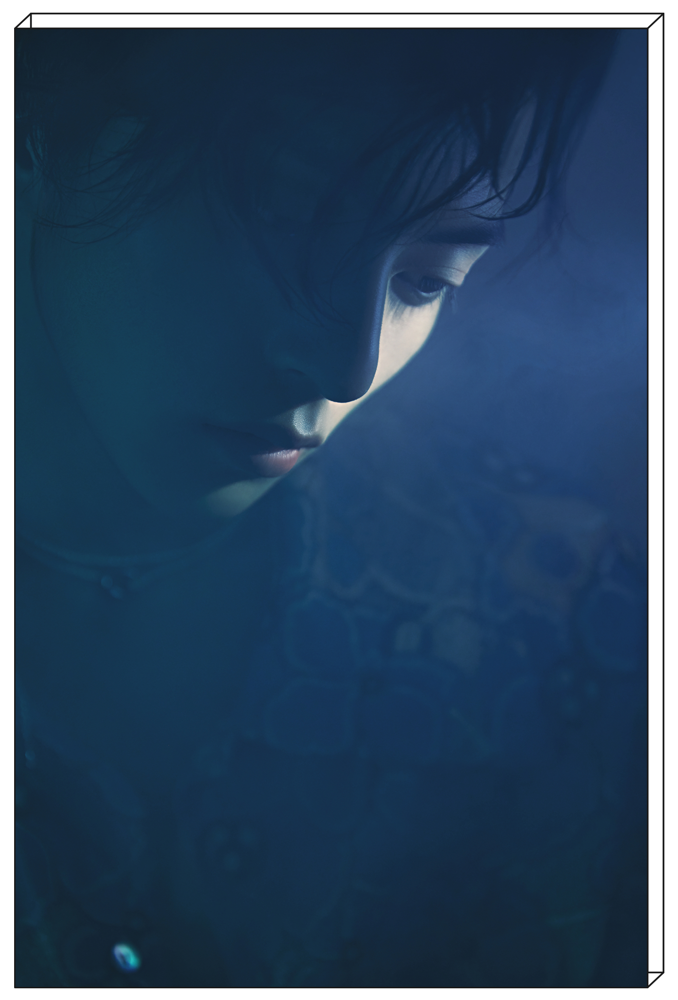

陈俊豪
（中国内地男歌手）
陈俊豪，1999年12月24日出生于四川省，中国内地男歌手。
2017年7月，发行首支原创单曲《凌晨》，从而正式出道。 2018年，推出个人单曲《落雨期》。2019年，发布个人
单曲 《平安夜别哭》。 2020年，参与录制的少年成长综艺节目
《少年之名》
在优酷播出，陈俊豪凭借 一首原创
歌曲《sense of alienation》获得导师赞赏。 2021年，参与录制的励志综艺节目
《青春有你第三季》
在爱奇艺播出。

陈俊豪drcchen专辑《读白》概念照
中文名
陈俊豪
身高
175cm
外文名
Drcchen
体重
52kg
国籍
中国
出生地
四川省
生日期
1999年12月24日
星座
摩羯座
目
录
1 百度百科
2 舞台直拍
3 原创音乐
4 人物评价